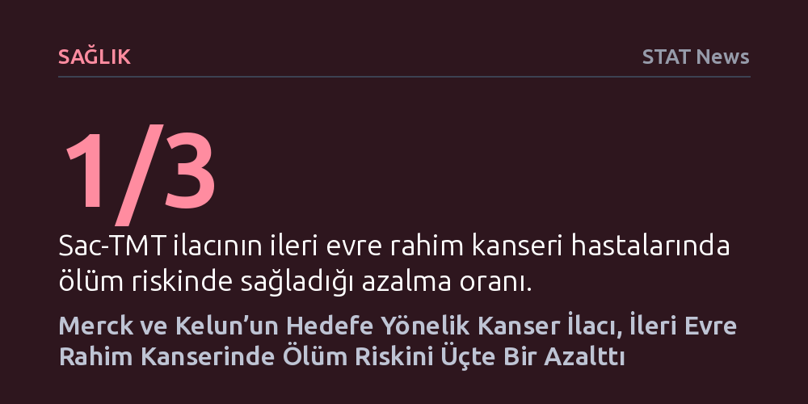

SAGLIK · STAT News · 2026-10-27
Merck ve Çinli Kelun-Biotech ortaklığında geliştirilen hedefe yönelik kemoterapi ilacı sac-TMT, ileri evre rahim kanseri hastalarında ölüm riskini üçte bir oranında azalttı. Faz 3 klinik çalışma bulguları, ilacın küresel onay süreçlerinde ve şirketin patent dönüşümünde kritik bir dönüm noktasına işaret ediyor.
İleri evre jinekolojik kanserlerde hedefe yönelik yeni nesil kemoterapilerin ölüm riskini belirgin şekilde düşürebildiğini ve kanser tedavisinde yeni bir klinik standardın yaklaştığını gösteriyor.

Madrid'de düzenlenen uluslararası onkoloji kongresinde sunulan randomize Faz 3 klinik çalışma sonuçları, jinekolojik kanserlerin tedavisinde umut verici bir ilerlemeye işaret ediyor. İlaç devi Merck ile Çin merkezli Kelun-Biotech tarafından ortaklaşa geliştirilen hedefe yönelik kemoterapi ilacı sac-TMT, ileri evre endometriyal (rahim içi) kanser hastalarında ölüm riskini üçte bir oranında azalttı. Kadınlar arasında yaygın görülen ve ileri evreye ulaştığında tedavi seçenekleri oldukça kısıtlı kalan bu kanser türünde, sağkalım süresini bu denli anlamlı ölçüde uzatan bir sonucun elde edilmesi onkoloji dünyasında dikkatle karşılandı.
Çalışma, standart tedavilere yanıt vermeyen ya da hastalığı nükseden ileri evre hasta grubunda ilacın etkinliğini doğrudan ortaya koydu. Elde edilen veriler, yalnızca tümörün büyümesini durdurmakla kalmayıp hastaların genel yaşam beklentisini doğrudan artıran somut bir klinik fayda sağlandığını doğruluyor. Bu gelişme, özellikle ileri evre jinekolojik tümörlerde kemoterapiye direnç gelişen süreçlerde yeni bir standart oluşturma potansiyeli taşıyor.
Kısaca sac-TMT olarak adlandırılan sacituzumab tirumotecan, antikor-ilaç konjugatı (ADC) sınıfına giren yeni nesil bir biyolojik tedavi yöntemi olarak işlev görüyor. Geleneksel kemoterapiler sağlıklı dokular ile tümör hücreleri arasında ayrım yapamadığı için vücutta ağır yan etkilere yol açarken, bu biyolojik mekanizma adeta bir güdümlü füze gibi çalışıyor. İlaç, tümör hücrelerinin yüzeyindeki belirli hedefleri tanıyan bir antikor ile bu antikora bağlı yüksek etkili bir kemoterapötik yükten oluşuyor; böylece zehirli etken madde doğrudan kanserli hücrenin içerisine bırakılıyor.
Molekülün etkinliği ilk olarak geliştirildiği ülke olan Çin'de tescillenmiş durumda. Kelun-Biotech'in Çin'de yürüttüğü daha önceki klinik araştırmalar, sac-TMT'nin birden fazla kanser türünde sağkalımı uzatan güçlü sonuçlar verdiğini göstermiş ve ilaç orada resmi onay alarak klinik kullanıma girmişti. Madrid'de paylaşılan son küresel Faz 3 verileri ise ilacın bu başarısının belirli bir coğrafya veya tek bir kanser türüyle sınırlı olmadığını, ileri evre rahim kanserinde de güçlü bir biyolojik üstünlük sağladığını pekiştiriyor.
Merck, sac-TMT'nin küresel ölçekte tescil edilmesi amacıyla dünya genelinde 18 farklı Faz 3 çalışmasını eş zamanlı olarak yürütüyor. Bu kapsamlı klinik geliştirme programının en dikkat çekici yönü ise çalışmaların 10 tanesinin doğrudan kadın kanserlerine odaklanmış olması. Şirket, elde edilen güçlü Faz 3 verileriyle başta Amerika Birleşik Devletleri ve Avrupa Birliği olmak üzere Çin dışındaki uluslararası sağlık otoritelerine resmi onay başvuruları yapmaya hazırlanıyor.
On sekiz ayrı Faz 3 denemesinin bulunması, ilacın tek bir endikasyonla sınırlı kalmayıp çok geniş bir hasta popülasyonuna ulaşma potansiyelini simgeliyor. Özellikle jinekolojik onkoloji alanında uzun yıllardır yaşanan tedavi tıkanıklıkları göz önüne alındığında, yürütülen 10 ayrı çalışmanın kadın kanserlerinde yeni bir tedavi omurgası oluşturabileceği belirtiliyor.
Klinik başarıların ardında, küresel biyoteknoloji sektörünün en büyük ticari dönüm noktalarından biri yatıyor. Merck'in dünyanın en çok satan immünoterapi ilacı olan Keytruda, 2028 yılında patent korumasını kaybedecek. Şirketin yıllık milyarlarca dolarlık gelirinin temelini oluşturan bu dev ilacın jenerik rekabetine açılacak olması, Merck'i doğacak devasa gelir boşluğunu dolduracak yeni nesil moleküller bulmaya zorluyor.
İşte sac-TMT, şirketin Keytruda sonrasındaki geleceğini garanti altına alma stratejisinde kilit bir rol üstleniyor. Kelun-Biotech ile kurulan bu ortaklık, hem Çin biyoteknoloji ekosisteminin yenilikçi ilaç geliştirme kapasitesinin küresel arenadaki ağırlığını kanıtlıyor hem de Batılı ilaç devlerinin yaklaşan patent uçurumuna karşı portföylerini nasıl yeniden yapılandırdığını somut biçimde ortaya koyuyor.